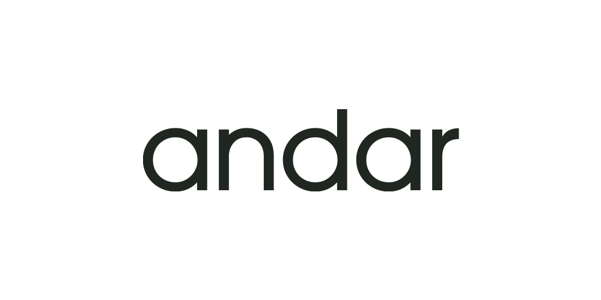
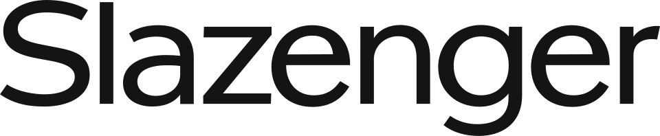
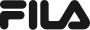

홈 > 브랜드 매거진 > 안다르
안다르
안다르(Andar)는 2015년 설립된 한국의 애슬레저 브랜드로, 요가복·레깅스로 잘 알려져 있다.
산업 분야 스포츠·아웃도어 · 공개 등급 자료 기반 · 브랜드 평가 4.2 ★

한눈에 보는 브랜드
안다르는 2015년 6월 당시 20대였던 신애련이 서울에서 창업한 애슬레저 브랜드다. 브랜드명은 스페인어로 걷다·전진하다를 뜻한다.
창업자가 하루 1000km를 운전하며 직접 영업을 뛰는 방식으로 기능성 레깅스 시장을 개척했고, 2018년 법인 설립과 함께 연매출 400억원을 넘어섰다. 첫 번째 전환점은 2021년 에코마케팅이 지분 약 56%를 확보하며 최대주주로 올라선 경영권 이동이고, 두 번째는 2024년 매출 2368억원·영업이익 327억원으로 사상 최대를 기록하며 수익형 브랜드로 체질을 바꾼 것이다.
현재 젝시믹스와 함께 국내 애슬레저 2강 구도를 형성하고 있다.
브랜드 관점
안다르를 읽는 핵심 축은 라이벌 젝시믹스와의 차별화다. 젝시믹스가 컬러·디자인 다양성과 가성비로 외형을 키웠다면, 안다르는 자체 연구개발 원단과 에어쿨링 같은 기능 라인을 전면에 세워 품질·프리미엄 포지션을 택했다.
2021년 에코마케팅 인수 이후 마케팅 효율과 수익성 중심으로 운영 기조가 바뀐 점이 2024년 영업이익률 14%로 이어졌고, 이는 매출 규모만 키우던 1세대 애슬레저의 한계를 넘어선 변화로 해석된다. 전략의 무게중심은 해외로 이동 중이다.
일본·싱가포르·호주에서 월 35억원대 매출을 올리며 직영 매장을 확장했고, 미국은 별도 브랜드로 시장을 노린다. 룰루레몬·알로요가 등 수입 프리미엄이 국내로 밀려들고 뮬라웨어가 기업회생에 들어간 한국 시장 재편 국면에서, 안다르의 기능·수익·글로벌 삼각 전략은 K-애슬레저의 지속 가능성을 가늠하는 시험대다.
시작과 성장
안다르가 등장한 2015년 무렵 한국에서는 운동복을 일상복으로 입는 흐름이 막 번지고 있었으나, 몸에 맞고 비치지 않는 기능성 레깅스를 찾기 어려웠다. 창업자 신애련은 요가 강사 경험에서 느낀 불편을 출발점 삼아 직접 제품을 만들었고, 자본도 인맥도 없이 차에 제품을 싣고 전국 요가원과 매장을 도는 발품 영업으로 초기 수요를 끌어냈다.
SNS 입소문이 맞물리며 인지도가 빠르게 올라갔다. 첫 전환점은 2018년 법인 체계를 갖추고 연매출 400억원을 돌파한 것으로, 단일 품목 브랜드에서 기업 조직으로 전환한 시점이다.
두 번째 전환점은 2021년 5월 에코마케팅이 지분 약 56%를 인수해 최대주주가 되고 창업자가 경영 일선에서 물러난 것이다. 창업자 측 가족과 얽힌 사법 논란이 오너 리스크로 부각된 시기와도 겹친다.
이후 안다르는 싱가포르 마리나베이와 오차드 백화점, 호주 시드니로 직영 매장을 넓히고 미국 진출까지 확장하며 글로벌 무대로 영역을 키웠다.
브랜드 아이덴티티
안다르가 내세우는 가치는 경쟁이나 기록이 아니라 각자의 속도로 더 나은 일상을 걷는다는 웰니스 지향이다. 운동과 여가가 자연스럽게 섞이는 삶을 응원한다는 메시지를 스스로 테크니컬 애슬레저로 규정하며, 자체 연구 조직이 개발한 원단과 착용 테스트를 품질 근거로 제시한다.
비주얼 아이덴티티는 절제된 워드마크와 차분한 톤을 중심으로 과장 없는 세련됨을 추구하고, 컬러 운용도 단정한 편이다. 핵심 타깃은 운동과 일상을 오가는 20~40대 여성에서 출발해 남녀노소 모두를 아우르는 방향으로 넓히고 있다.
브랜드 보이스는 성과를 압박하기보다 편안함과 자존감을 다독이는 차분하고 포용적인 어조를 유지한다.
제품과 서비스
제품군은 레깅스를 축으로 요가·러닝웨어, 상의와 브라탑, 아우터, 라운지웨어, 남성·키즈 라인까지 확장돼 있다. 대표작은 에어쿨링 지니 시그니처 레깅스로, 통기성과 신축성을 강조한 기능 원단이 특징이며 정상가는 약 98,000원, 상시 할인과 1+1 구성으로 실구매가가 조정된다.
에어코튼 등 소재별 시리즈도 갖췄다. 판매는 자사 온라인몰과 직영·백화점 오프라인 매장, 무신사 같은 외부 플랫폼, 그리고 일본·싱가포르·호주 등 해외 채널로 이뤄진다.
현재 상태
본사는 서울 송파구에 있다. 운영 주체는 에코마케팅이 2021년 지분 약 56%를 확보한 최대주주로, 창업자 신애련은 경영 일선에서 물러난 상태다.
2024년 매출은 2368억원, 영업이익은 327억원으로 사상 최대를 기록했고 영업이익률은 14% 수준이다. 2025년에는 1분기 467억원, 상반기 누적 1358억원, 3분기 774억원에 3분기 누적 2132억원으로 최대 실적 흐름을 이어갔다.
연간 확정 결산 수치는 미공개다.
타임라인
정리된 연도형 이벤트가 없습니다.
BI/CI 변천사
함께 읽을 브랜드
스포츠·아웃도어 · 디렉토리젝시믹스 스포츠·아웃도어 · 편집 검수아디다스
스포츠·아웃도어 · 편집 검수아디다스 스포츠·아웃도어 · 편집 검수파타고니아
스포츠·아웃도어 · 편집 검수파타고니아 스포츠·아웃도어 · 편집 검수Sarajevo 1984
스포츠·아웃도어 · 편집 검수Sarajevo 1984 스포츠·아웃도어 · 자료 기반코오롱스포츠
스포츠·아웃도어 · 자료 기반코오롱스포츠
젝시믹스는 스포츠·아웃도어 브랜드로, 기능성, 경기 문화, 커뮤니티, 착용 이미지가 브랜드 가치를 만드는 영역입니다.

스포츠·아웃도어 · 편집 검수Slazenger슬래진저(Slazenger)는 1881년 영국 런던에서 설립된 스포츠용품 브랜드로, 현존하는 세계에서 가장 오래된 스포츠 브랜드 중 하나로 꼽힌다. 테니스와 골프를...
스포츠·아웃도어 · 편집 검수아디다스아돌프 다슬러가 1948년에 설립한 독일의 스포츠 브랜드로 운동화, 운동복, 운동용품 등을 제조 · 판매함. 아디다스의 정의 및 기원 아디다스(adidas)는 바이에...
스포츠·아웃도어 · 편집 검수파타고니아파타고니아는 아웃도어 브랜드이면서 동시에 소비를 줄이라는 역설적 메시지로 신뢰를 쌓은 브랜드다. 제품을 파는 기업이지만 브랜드의 설득력은 자연, 책임, 오래 쓰는 태...
스포츠·아웃도어 · 편집 검수Sarajevo 1984Sarajevo 1984는 1978년에 기록된 Sport 계열의 브랜드 아이덴티티 사례입니다. Miroslav Antonić Roko, Branko Bačanović...

스포츠·아웃도어 · 자료 기반휠라휠라(FILA)는 1911년 이탈리아에서 창립된 스포츠웨어 브랜드로, 2007년 한국의 휠라코리아가 전 세계 브랜드 사업권을 인수해 현재 한국 기업(휠라홀딩스)이 소...
스포츠·아웃도어 · 자료 기반코오롱스포츠코오롱스포츠(KOLON SPORT)는 코오롱인더스트리 FnC부문이 운영하는 대한민국의 아웃도어 브랜드다. 1973년 창립한 국내 1세대 아웃도어로, 고기능성 등산·아...
EI
아이더
스포츠·아웃도어 · 자료 기반아이더아이더(EIDER)는 1962년 프랑스에서 설립돼 현재 한국 K2코리아가 전개·보유한 아웃도어 브랜드다.